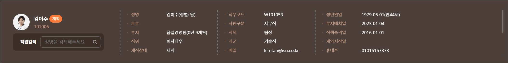

Layout
- 인사발령 페이지들은 공통레이아웃의 .sub_menu_container 없이 main.appointment_wrap 을 공통으로 사용합니다.
- 공통적으로 main.appointment_wrap 내부에는 공통테이블, sheet 영역으로 구성되어 있습니다.
인사정보
- 인사정보는 레거시 코드를 그대로 사용하되, 스타일만을 변경했습니다.
- 컬러 테마 별 3가지 type으로 색상이 정해져있습니다.
- Blue, Navy, Green 테마가 기본(hrux_fit.css)을 사용하고, white, orange테마 사용 시 테마 css를 import 해야합니다.
Blue, Navy, Green 테마
White 테마
Orange 테마

인사정보 재직상태에 따른 색상 클래스 안내
- 재직 : green
- 휴직: blue
- 퇴직: orange
- 그 밖의 상태일 때는 별도의 색상 class 안내 : red, purple
재직상태 별 색상